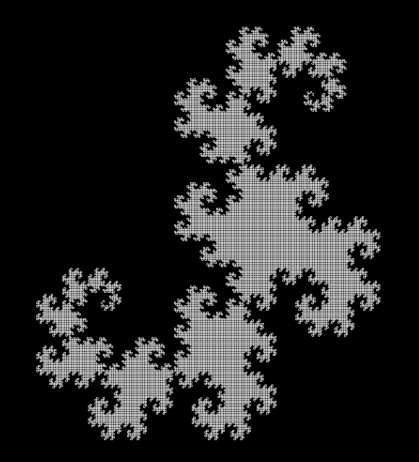
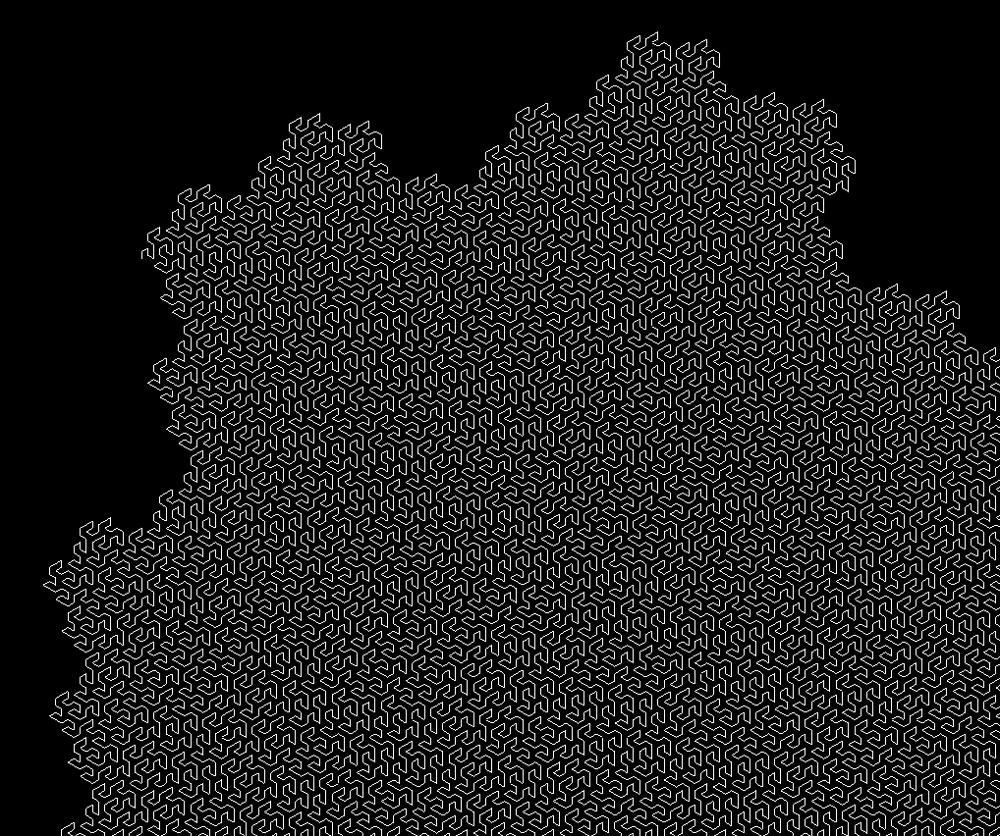
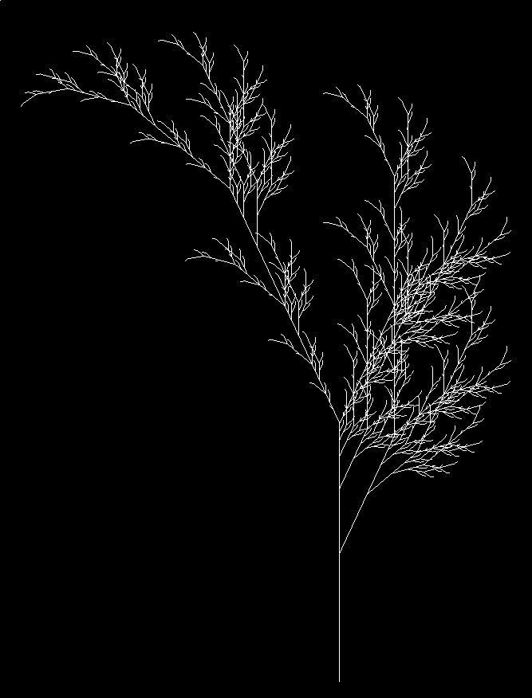
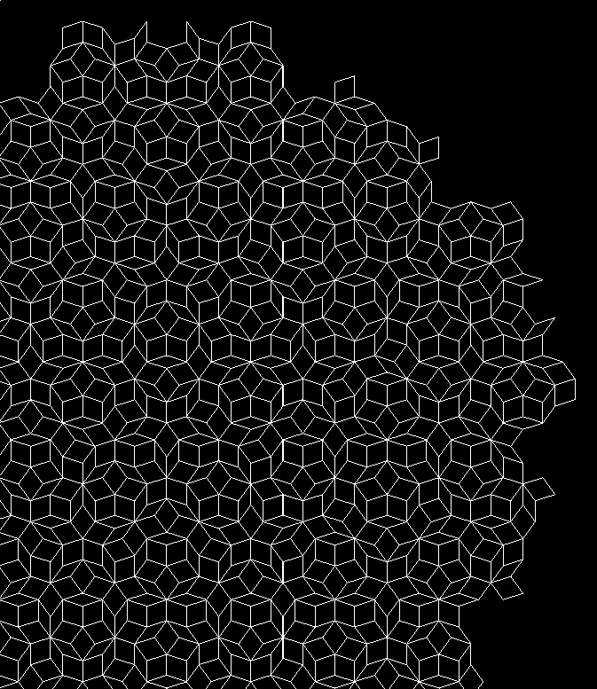
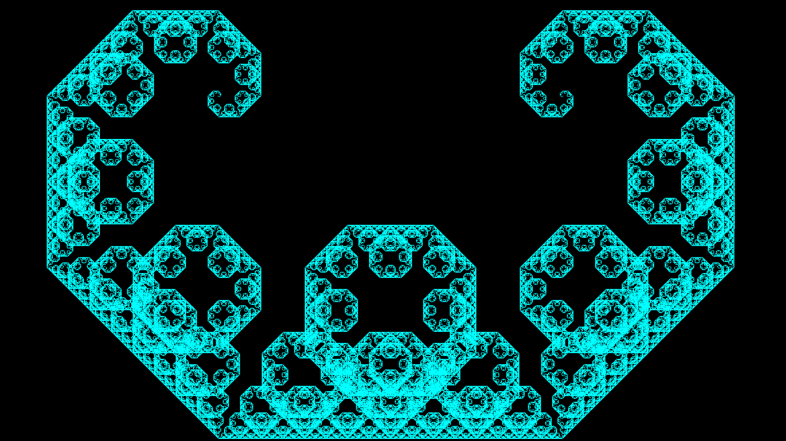

Generating and representing L-systems
Table of Contents
L-systems are a formal way to make interesting visualisations. You can use them to model a wide variety of objects: space-filling curves, fractals, biological systems, tilings, etc.
See the Github repo: https://github.com/dlozeve/lsystems
What is an L-system?
A few examples to get started




Definition
An L-system is a set of rewriting rules generating sequences of symbols. Formally, an L-system is a triplet of:
- an alphabet \(V\) (an arbitrary set of symbols)
- an axiom \(\omega\), which is a non-empty word of the alphabet (\(\omega \in V^+\))
- a set of rewriting rules (or productions) \(P\), each mapping a symbol to a word: \(P \subset V \times V^*\). Symbols not present in \(P\) are assumed to be mapped to themselves.
During an iteration, the algorithm takes each symbol in the current word and replaces it by the value in its rewriting rule. Not that the output of the rewriting rule can be absolutely anything in \(V^*\), including the empty word! (So yes, you can generate symbols just to delete them afterwards.)
At this point, an L-system is nothing more than a way to generate very long strings of characters. In order to get something useful out of this, we have to give them meaning.
Drawing instructions and representation
Our objective is to draw the output of the L-system in order to visually inspect the output. The most common way is to interpret the output as a sequence of instruction for a LOGO-like drawing turtle. For instance, a simple alphabet consisting only in the symbols \(F\), \(+\), and \(-\) could represent the instructions “move forward”, “turn right by 90°”, and “turn left by 90°” respectively.
Thus, we add new components to our definition of L-systems:
- a set of instructions, \(I\). These are limited by the capabilities of our imagined turtle, so we can assume that they are the same for every L-system we will consider:
Forwardmakes the turtle draw a straight segment.TurnLeftandTurnRightmakes the turtle turn on itself by a given angle.PushandPopallow the turtle to store and retrieve its position on a stack. This will allow for branching in the turtle’s path.Stay, which orders the turtle to do nothing.
- a distance \(d \in \mathbb{R_+}\), i.e. how long should each forward segment should be.
- an angle \(\theta\) used for rotation.
- a set of representation rules \(R \subset V \times I\). As before, they will match a symbol to an instruction. Symbols not matched by any rule will be associated to
Stay.
Finally, our complete L-system, representable by a turtle with capabilities \(I\), can be defined as \[ L = (V, \omega, P, d, \theta, R). \]
One could argue that the representation is not part of the L-system, and that the same L-system could be represented differently by changing the representation rules. However, in our setting, we won’t observe the L-system other than by displaying it, so we might as well consider that two systems differing only by their representation rules are different systems altogether.
Implementation details
The LSystem data type
The mathematical definition above translate almost immediately in a Haskell data type:
-- | L-system data type
data LSystem a = LSystem
{ name :: String
, alphabet :: [a] -- ^ variables and constants used by the system
, axiom :: [a] -- ^ initial state of the system
, rules :: [(a, [a])] -- ^ production rules defining how each
-- variable can be replaced by a sequence of
-- variables and constants
, angle :: Float -- ^ angle used for the representation
, distance :: Float -- ^ distance of each segment in the representation
, representation :: [(a, Instruction)] -- ^ representation rules
-- defining how each variable
-- and constant should be
-- represented
} deriving (Eq, Show, Generic)Here, a is the type of the literal in the alphabet. For all practical purposes, it will almost always be Char.
Instruction is just a sum type over all possible instructions listed above.
Iterating and representing
From here, generating L-systems and iterating is straightforward. We iterate recursively by looking up each symbol in rules and replacing it by its expansion. We then transform the result to a list of Instruction.
Drawing
The only remaining thing is to implement the virtual turtle which will actually execute the instructions. It goes through the list of instructions, building a sequence of points and maintaining an internal state (position, angle, stack). The stack is used when Push and Pop operations are met. In this case, the turtle builds a separate line starting from its current position.
The final output is a set of lines, each being a simple sequence of points. All relevant data types are provided by the Gloss library, along with the function that can display the resulting Picture.
Common file format for L-systems
In order to define new L-systems quickly and easily, it is necessary to encode them in some form. We chose to represent them as JSON values.
Here is an example for the Gosper curve:
{
"name": "gosper",
"alphabet": "AB+-",
"axiom": "A",
"rules": [
["A", "A-B--B+A++AA+B-"],
["B", "+A-BB--B-A++A+B"]
],
"angle": 60.0,
"distance": 10.0,
"representation": [
["A", "Forward"],
["B", "Forward"],
["+", "TurnRight"],
["-", "TurnLeft"]
]
}Using this format, it is easy to define new L-systems (along with how they should be represented). This is translated nearly automatically to the LSystem data type using Aeson.
Variations on L-systems
We can widen the possibilities of L-systems in various ways. L-systems are in effect deterministic context-free grammars.
By allowing multiple rewriting rules for each symbol with probabilities, we can extend the model to probabilistic context-free grammars.
We can also have replacement rules not for a single symbol, but for a subsequence of them, thus effectively taking into account their neighbours (context-sensitive grammars). This seems very close to 1D cellular automata.
Finally, L-systems could also have a 3D representation (for instance space-filling curves in 3 dimensions).
Usage notes
- Clone the repository:
git clone [[https://github.com/dlozeve/lsystems]] - Build:
stack build - Execute
stack exec lsystems-exe -- examples/penroseP3.jsonto see the list of options - (Optional) Run tests and build documentation:
stack test --haddock
Usage: stack exec lsystems-exe -- --help
lsystems -- Generate L-systems
Usage: lsystems-exe FILENAME [-n|--iterations N] [-c|--color R,G,B]
[-w|--white-background]
Generate and draw an L-system
Available options:
FILENAME JSON file specifying an L-system
-n,--iterations N Number of iterations (default: 5)
-c,--color R,G,B Foreground color RGBA
(0-255) (default: RGBA 1.0 1.0 1.0 1.0)
-w,--white-background Use a white background
-h,--help Show this help text
Apart from the selection of the input JSON file, you can adjust the number of iterations and the colors.
stack exec lsystems-exe -- examples/levyC.json -n 12 -c 0,255,255

References
- Prusinkiewicz, Przemyslaw; Lindenmayer, Aristid (1990). The Algorithmic Beauty of Plants. Springer-Verlag. ISBN 978-0-387-97297-8. http://algorithmicbotany.org/papers/#abop
- Weisstein, Eric W. “Lindenmayer System.” From MathWorld–A Wolfram Web Resource. http://mathworld.wolfram.com/LindenmayerSystem.html
- Corte, Leo. “L-systems and Penrose P3 in Inkscape.” The Brick in the Sky. https://thebrickinthesky.wordpress.com/2013/03/17/l-systems-and-penrose-p3-in-inkscape/